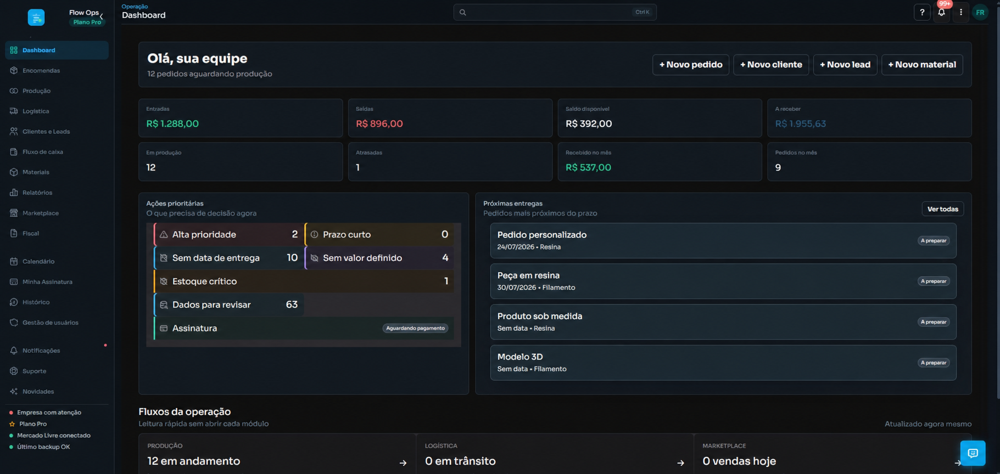
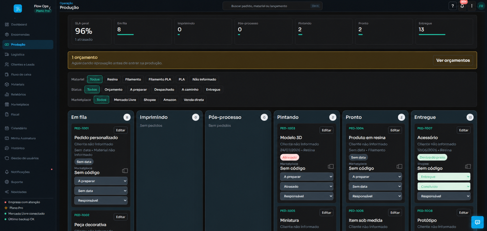
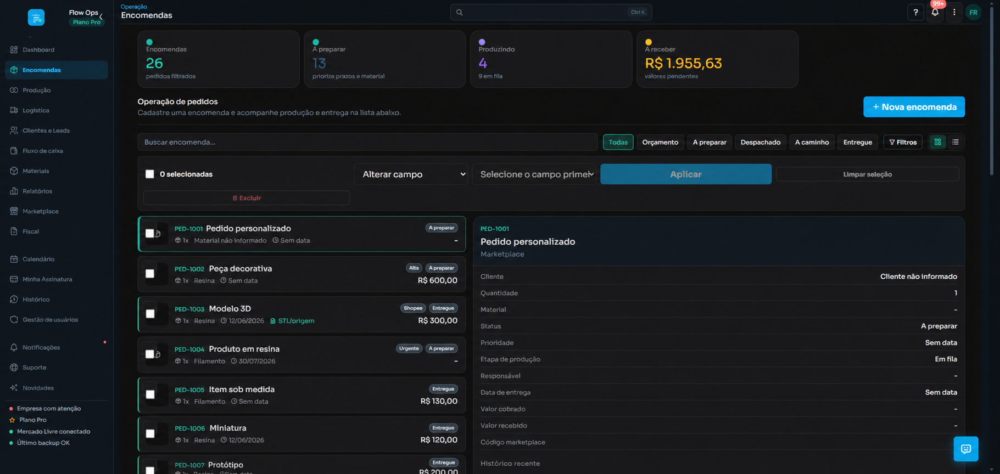

OPERAÇÃO SOB DEMANDA, SEM CAOS
Pedidos, produção e clientes no mesmo fluxo.
O FlowOps substitui planilhas, mensagens perdidas e controles paralelos por uma operação clara, rastreável e pronta para crescer.
- Plano gratuito permanente
- Configuração simples
- Integração com marketplaces

CONTROLE DE PONTA A PONTA
Feito para quem vende, produz ou entrega sob demanda.
Impressão 3D, personalizados, brindes, marcenaria, comunicação visual, confeitaria e qualquer operação baseada em encomendas.
Encomendas organizadas
Prazo, prioridade, responsável, valor, origem, arquivos e observações em um único registro.
Produção visual
Kanban com filtros e atualização rápida para saber o que está parado, em execução ou pronto.
Clientes e oportunidades
Leads, orçamentos, follow-ups e histórico comercial conectados aos pedidos.
Marketplaces integrados
Sincronize anúncios e vendas, evite duplicidades e rastreie falhas de integração.
Financeiro operacional
Visualize entradas, saídas, valores a receber e desempenho por canal de venda.
Auditoria e alertas
Saiba quem alterou cada informação e receba avisos sobre atrasos, tokens e backups.
A ROTINA FICA VISÍVEL
Da venda recebida até a entrega.
Cada pedido entra no fluxo certo, recebe responsável e avança pela produção sem desaparecer em conversas ou anotações.
- Filtros por material, status e marketplace
- SLA visual e alertas de atraso
- Edição direta no Kanban
- Arquivos e referências anexados ao pedido

COMECE SEM PROJETO LONGO
Uma implantação direta.
- Crie sua empresaEscolha um plano e cadastre o usuário administrador.
- Configure o fluxoCadastre equipe, materiais, responsáveis e preferências.
- Conecte seus canaisIntegre o Mercado Livre e prepare outros marketplaces.
- Opere com dadosAcompanhe produção, vendas, alertas e resultados.

MENOS RETRABALHO
Informação útil no lugar da operação improvisada.
“Agora consigo localizar o pedido, entender a etapa e conferir o histórico sem procurar em várias conversas.”
AVALIAÇÕES
Desenvolvido a partir de problemas reais de operação.
★★★★★
“O Kanban deixou claro o que estava parado e o que precisava sair primeiro.”
Operação sob encomenda★★★★★
“A integração reduz cadastro repetido e mantém o código da venda junto ao pedido.”
Vendas em marketplace★★★★★
“Dashboard, clientes e alertas deram uma visão que a planilha nunca conseguiu entregar.”
Pequena empresaDepoimentos demonstrativos baseados nos fluxos validados durante o desenvolvimento. Substitua por avaliações verificadas à medida que novos clientes entrarem.
PLANOS QUE CRESCEM COM A OPERAÇÃO
Comece gratuitamente. Evolua quando precisar.
Valores e limites são carregados diretamente da plataforma e permanecem sempre atualizados.
Carregando planos...
PERGUNTAS FREQUENTES
O que você precisa saber antes de começar.
O FlowOps serve apenas para impressão 3D?
Não. O sistema atende qualquer empresa que trabalhe com encomendas ou produção sob demanda, como personalizados, brindes, marcenaria, confeitaria, comunicação visual e oficinas.
Preciso instalar algum programa?
Não. O FlowOps funciona no navegador em computador, tablet e celular. Basta acessar com seu e-mail e senha.
Como o sistema identifica minha empresa?
Seu usuário fica vinculado à empresa no momento do cadastro. Ao entrar, o FlowOps localiza automaticamente o ambiente correto e aplica o plano, dados e permissões dessa empresa.
Posso começar sem pagar?
Sim. O plano Gratuito é permanente e permite validar o fluxo antes de contratar recursos adicionais.
Como funciona a integração com Mercado Livre?
Depois de criar a conta, o administrador conecta o Mercado Livre por autorização segura. O sistema pode sincronizar anúncios e vendas conforme os limites do plano.
Meus funcionários podem ter acessos diferentes?
Sim. O administrador cria usuários e define permissões de administração, edição ou somente leitura, respeitando o limite do plano contratado.
O que acontece quando uma venda é importada duas vezes?
O FlowOps usa identificadores do marketplace para evitar duplicidade e registra a ocorrência nos logs de integração.
Consigo acompanhar atrasos e prazos?
Sim. O sistema possui SLA visual, alertas no dashboard e notificações para pedidos atrasados ou com dados incompletos.
Posso mudar de plano depois?
Sim. Upgrade e downgrade são solicitados em Minha Assinatura. O sistema valida limites de usuários e uso antes de concluir a mudança.
Como funciona o suporte?
Clientes abrem chamados dentro do sistema e acompanham respostas e status. Ocorrências importantes também geram notificações.
Transforme pedidos soltos em uma operação previsível.
Crie sua empresa no FlowOps e comece pelo plano gratuito.
Criar minha conta